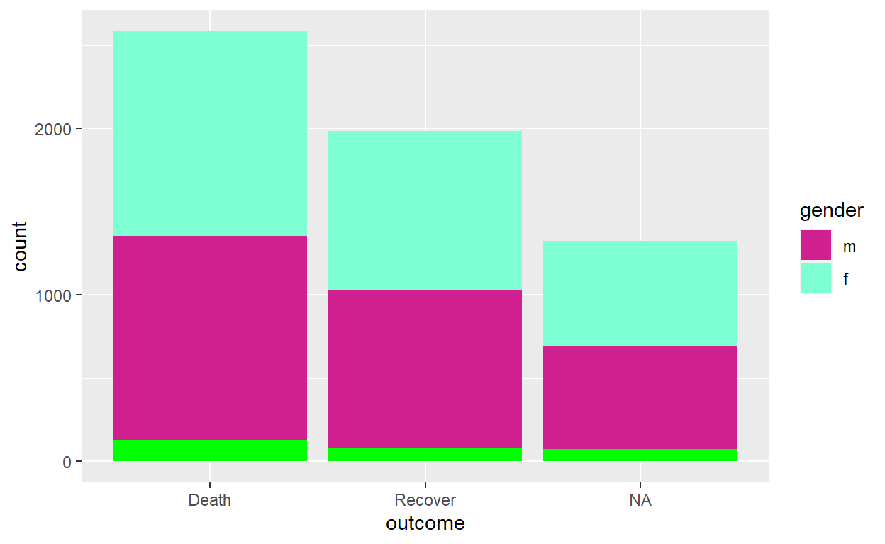

| ID: | Password: | ||||
|
|
|||||
Introduction to R for Applied Epidemiology and Public Health
Data visualisation

Welcome
Welcome to the course “Introduction to R for applied epidemiologists”, offered for free by Applied Epi - a non-profit organisation that offers open-source tools, training, and support to frontline public health practitioners.
This interactive tutorial focuses on visualisation of data with the ggplot2 R package, for example into figures such as epidemic curves, demographic pyramids, and many varieties of bar, line, and scatter plots.
This tutorial draws from chapters of our free Epidemiologist R handbook such as ggplot basics, ggplot tips, epidemic curves. The Epi R Handbook has over 50 chapters, has helped over 110,000 people learn R, and is also available for offline use.
Target Audience
This course is designed with the following objectives:
- To be friendly to people who have never used a programming language before
- To teach R emphasizing examples, datasets, and challenges commonly faced by applied epidemiologists
- To be modular - so that you can skip to section most relevant to you
We expect that you know how to do … TO DO
Other languages
This course is available…
Offline / Online
You can access this tutorial offline by downloading our R package … If viewing offline, you can view the videos by doing …
Learning goals
In this tutorial you will learn:
- The basics of data visualization in R with ggplot2 (Part 1)
- The “grammar of graphics” approach to data visualization (Part 1)
- How to customize and edit plots to achieve the look you want (Part 1)
- Methods to produce some common epidemiological plots with ggplot2 and other helper functions (Part 2)
- How to combine and overlay your plots (Part 2)
- Getting used to reading documentation and applying new functions to your data (Part 2)
- The very basics of interactive plotting with plotly (Part 2)
Data consent
We continually improve these tutorials by collecting your entries and submitted answers to the quiz questions. By continuing, you consent to this collection and use.
To continue anonymously… do XYZ.
Who made this course
This course is designed by epidemiologists with decades of ground-level experience in outbreak response and local public health work.

Data used and directory structure
In this tutorial we will use the following dataset. Please take a few minutes to review the structure and content of the before continuing.
Use the arrows on the right to scroll through hidden columns. Note that there are “raw” (messy) datasets that mimic problems commonly found in real-life epidemiological datasets availble. As we are focusing on visualization here we will use pre-cleaned data. The data cleaning tutorials cover the processing of raw data to get to this point and we recommend looking through these first
A “linelist” of cases in a fictional (not real) Ebola outbreak
A “linelist” is a term used in applied epidemiology to refer to a table that contains key information about each case or suspect case in an outbreak. Each row represents one case, and the columns contain variables such as age, sex, date of symptom onset, outcomes, etc.
This dataset contains 5888 rows and 30 columns. Below are the first 5 rows:
Click to download the clean dataset as an .rds file for your own practice. A .rds file is an R-specific file type that preserves column classes. This ensures you will have only minimal cleaning to do after importing the data into R.
Directory structure
Photo or GIF of directory structure
Accessing example data
The example data used in this exercise is available from the link below. This data is in the rds format, an R-specific format which preserves data formatting. Click to download the clean dataset as an .rds file for your own practice. A .rds file is an R-specific file type that preserves column classes. This ensures you will have only minimal cleaning to do after importing the data into R.
Tidy Data
We highly recommend doing our tutorial on Tidy Data in Applied Epidemiology. Collecting, formatting, and preparing your dataset before importing it into R is a critical step!
We also recommend following the tutorials in order and first learning the process of data cleaning which gives the example data above from a raw excel dataset.
LINK
Install and Load R packages
To use basic functions with public health data, the tidyverse metapackage is very useful. Tidyverse loads the dplyr, ggplot2, and other packages that are useful in epi data analysis.
We’ve preloaded the below packages for now. Installation and loading of these packages is described on the EpiRHandbook Suggested Packages page.
pacman::p_load(
rio, # importing data
here, # relative file pathways
skimr, # review data
DT, # visualize data frame
janitor, # data cleaning and tables
epikit, # age categories
lubridate, # working with dates
incidence2, # epidemic curves
ggrepel, # smart labels
ggExtra, # extras
esquisse, # point-and-click for simple ggplots
apyramid, # age pyramids
scales, # formatting of scales
plotly, # interactive plots
cowplot, # combine plots
tidyverse, # ggplot2 & data management
gghighlight # nice highlighting features for ggplot
)Recommended R packages for public health
See this Epi R Handbook LINK for our recommended packages.
Import data
In this example code we will work with the cleaned fictional Ebola data linked in the “Data used and directory structure” section. Import that data into R. If you are interested in the process of cleaning data have a look at the data cleaning tutorial.
To import data from a sub-folder, the import() command should be modified so that it correctly tells R where to search for this file. This is done using the here() function. In the example below we expect your data to be stored in a sub-directory (folder) named data within your R project. In your own use you will need to modify this code for your own directory structure.
linelist <- import(here("data", "linelist_cleaned.rds")) # import data and save as named objectggplot basics
There are a number of visualization options within the R software but in this tutorial and the handbook we focus on the ggplot2 package available within the tidyverse. This is the visualization package of choice for may epidemiologists and other R users as it has a number of benefits over the basic plot() function built in to R.
ggplot2:
- Is good for fast data exploration (especially with large numbers of parameters)
- Produces very high quality final outputs which can often be used directly in publications or reports
- has well structured and consistent inputs, once you learn the basics you can apply the same techniques to many data and plot types
- Is actively updated and built on with additional packages to extend functionality
Grammar of graphics
Visualizing multi-dimensional data well is a balance of art and science. Visualization is one of the most important parts of a statistical analysis as it allows you to share what you have achieved and, when done correctly, can help to explain complex work and concepts to a wider audience of stakeholders or the general public. Visualization can also be a key step when getting to grips with new data or with analyses you are working on.
Visualization of Anscombe’s quartet, a famous set of 4 very different datasets which resolve to the same set of summary statistics and same linear line of best fit. This highlights the importance of visualization when dealing with new or unknown data. Figure adapted from Debosruti Dutta
The grammar of graphics refers to the basic structure generally followed in ggplot2 where different building blocks of the plot are manipulated in individual lines of code. These range from data, the basic requirement of all data visualization, up to individual design tweaks specific to your own needs or liking.

In ggplot2 we build a plot by “adding” commands on top of one another which specify plot layers and design elements. For a standard plot your order will follow this process:
- “Open” the plot with the
ggplot()command and specify the dataset - “Map” data columns to “aesthetic” features of the plot such as axes, colour, size, shape fill, transparency etc.
- Add “geom” layers to visualise your data in the desired way
- Modify “scales” such as colour choices, axis breaks
- Add “theme” design elements to your plot such as axis labels, title, captions, fonts, text sizes, background themes and the orientation of different elemnets
“Adding” layers to your plot is done literally, by ending a ggplot line with the + symbol you can indicate that you wish to add further details on the following line. This can be repeated until your complete plot is built. Using this line-by-line syntax allows your code to be more readable, both for you to make changes in the future and to others trying to understand your work. Additionally we can add line breaks within lines of ggplot code, this is useful to highlight when you are specifying a different argument of the plot and leads to more readable plots, you will see examples of this throughout the tutorial. These line breaks are not necessary for the code to run but are useful to help yourself and others disect the code.
In the following sections we will put this into practice step-by-step.
ggplot2 in RStudio
In this tutorial we code within chunks inside of this tutorial module. In reality you will likely be running your R code with the popular R coding environment RStudio.
When we run a plotting command in RStudio the code will run in the console (as with any other R code) but you will not see the output here. The output will be passed to the “Plots” tab. By default this is in the bottom right quadrant of RStudio alongside the “Files”, “Packages”, “Help” and “Viewer” tabs:

If we save our plot in or R environment by assigning it to a name it will not plot when we run the code, only when we run the name of the plot: 

To see your plot in a larger window you can click on “Zoom” (1)
We can also remove plots from the plot tab using the red X button to remove the current plot (2) or the little brush to remove all previous plots (3).
The “Export” button (4) allows us to save plots to a file or copy to our clipboard to paste elsewhere. To save a ggplot() with a function we can use ggsave(). This gives more options than exporting via the RStudio window and is also useful to save multiple plots from the same code.
ggsave() can work in two ways: * Specify the name of the plot object, then the file path and name with extension * For example: ggsave(plot_name, here(“plots”, “plot_name.png”)) * Run the command with only a file path, to save the last plot that was printed * For example: ggsave(here(“plots”, “plot_name.png”))
You can export as png, pdf, jpeg, tiff, bmp, svg, or several other file types, by specifying the file extension in the file path.
You can also specify the arguments width =, height =, and units = (either “in”, “cm”, or “mm”). You can also specify dpi = with a number for plot resolution (e.g. 300). See the function details by entering ?ggsave or reading the documentation online
“Open” the plot
The ggplot2 package is built around the R function ggplot() which is the first command for any ggplot. Running ggplot() in your R console should generate a blank canvas:
ggplot()ggplot()We assign the dataframe we wish to use with the data = argument of this function. In our example this dataframe is called linelist:
ggplot(data = linelist)If you are familiar with the pipe operator (%>%) from our data cleaning tutorial, data can also be passed into a ggplot command using a pipe:
linelist %>%
ggplot()Mapping columns
ggplot(
data = linelist,
mapping = aes(x = age,
y = bmi))“Aesthetics” are features whose display could vary or each data point. An obvious example are the X and Y co-ordinates but these can also include the color, shape and other properties of the plot which depend on columns in your data. We will get into other aesthetics further into the tutorial.
mapping = aes() assigns plot aesthetics to columns from your data. Any arguments to be input must be placed within the aes() command to be interpreted as dependent on the data.
Here we have set the axes X and Y to the age and bmi columns from the linelist data. You can see this represented on the axes above.
The first 25 rows of the linelist data are reproduced below. Try changing the Y axis to weight rather than BMI in the R window below. You can use the arrows to scroll left and right through the table and find the correct column.
Below is an R exercise where you can edit and write your own code. Using “Run code” will run what you have entered and produce an output, to check your answer against the solution click “Submit Answer”. If you get stuck be sure to click the “Hints” button above the code chunk to get a hint to the solution.
ggplot(
data = linelist,
mapping = aes(x = age,
y = bmi))The weight column is labeled wt_kgggplot(
data = linelist,
mapping = aes(x = age,
y = wt_kg))Note: You may see aes() called in ggplot code without the mapping = argument being specified, as with any R function the arguments do not need to be specifically named as long as they are passed in the order expected by the function. For clarity here we include mapping = but if you see code elsewhere without this it achieves the same result.
Add geoms
As we have seen above, running our ggplot() command with the data attached and X and Y coordinates determined does not give us a completed plot. To do this we need to add geometry with “geom” commands. These all follow a common format of geom_XXXX() where XXXX is replaced with a plot type such as geom_line() or geom_bar() or more general objects to be plotted such as text: geom_text() or a horizontal line: geom_hline(). A full list of available ggplot2 geoms can be found in the ggplot reference document and many more can be added by loading additional packages. Some common “geoms” for epidemiology are listed below:
- Histograms
geom_histogram() - Bar charts
geom_bar()orgeom_col()(These are covered later in the tutorial) - Box plots
geom_boxplot() - Points (eg. scatter plots)
geom_point() - Line graphs
geom_line()(points joined in order of the x-axis variable) orgeom_path()(points joined in the order given in the data) - Trend lines
geom_smooth()
Adding (+) geom_point() to our previous ggplot() call will plot points using the X and Y variables we defined:
ggplot(
data = linelist,
mapping = aes(
x = age,
y = wt_kg))+
geom_point()## Warning: Removed 86 rows containing missing values (geom_point).
You will see a warning when running this code reproduced above. This is due to missing data in the linelist. ggplot2 will automatically drop rows with missing values from simple plots.
We can also plot other simple plots with the same data by switching out the geom_point() for another geom. Below we plot a histogram of ages included in the linelist. This type of plot only requires a single variable. Can you spot what is missing from the code below?
ggplot(
data = linelist,
mapping = aes(x = age))
geom_histogram()remember we need to add layers to our ggplotggplot(
data = linelist,
mapping = aes(x = age)) +
geom_histogram()Other aesthetics
In the previous section we saw examples of plots that assigned columns in the data to both the x-axis and y-axis (e.g. scatterplots) and plots that used only an x-axis (e.g. histograms). As well as these simple aesthetics, we can also adjust elements specific to the type of plot we are using (the geom_*()):
- shape = Display a point with geom_point() as a dot, star, triangle etc.
- fill = The interior color (e.g. of a bar or boxplot)
- color = The exterior line of a bar, boxplot, etc., or the point color if using geom_point()
- size = Size (e.g. line thickness, point size)
- alpha = Transparency (1 = opaque, 0 = invisible)
- binwidth = Width of histogram bins
- width = Width of “bar plot” columns
- linetype = Line type (e.g. solid, dashed, dotted)
These plot object aesthetics can be assigned values in two ways:
- Static values (e.g. fill = “orange”) to apply across all plotted observations
- Assigned outside
aes() - same display for all data
- Assigned outside
ggplot(
data = linelist,
mapping = aes(x = age)) +
geom_histogram(
fill = "orange") NOTE: when we assign a character value such as the fixed color orange, we need to use quotation marks ("orange") whereas when we are mapping an aesthetic to a column name we do not use quotation marks
- A data column (e.g. color = gender) such that display of each observation depends on its value in that column
- Assigned inside
aes() - Dispalys data grouped by selected column
- Assigned inside
ggplot(
data = linelist,
mapping = aes(
x = age,
y = wt_kg)) +
geom_point(
mapping = aes(color = gender))Try changing the histogram plot code below to have the bar fill determined by gender.
ggplot(
data = linelist,
mapping = aes(x = age)) +
geom_histogram(fill = "orange")aes(fill = gender)ggplot(
data = linelist,
mapping = aes(x = age)) +
geom_histogram(
mapping = aes(fill = gender))More examples
For dot and line plots we assign the color using color rather than fill as they are outlines rather than filled objects. Here we also adjust the size (size =) of the points and the opacity (alpha =)(make them more see through; useful for overlaid plots)
ggplot(
data = linelist,
mapping = aes(
x = age,
y = wt_kg)) +
geom_point(
mapping = aes(color = outcome),
size = 2,
alpha = 0.5)
NOTE: here we assign size and alpha to fixed values outside of the mapping = aes() argument, these can also be mapped to columns in our data by placing them inside the argument and specifying a column name to map them to.
We will cover different color options later and how to change the colors assigned to your data. Basic colors for static mapping are built-in with ggplot2:
A range of point shapes are also available in R, these can be used to set point shapes. The ones with blue centers below have a fill and so can be filled with a different argument to their colour (outline)
As with the other aesthetics we have seen shape can be dynamic:
ggplot(
data = linelist,
mapping = aes(
x = age,
y = wt_kg)) +
geom_point(
mapping = aes(
shape = gender,
color = age_cat),
size = 3,
alpha = 0.3)or static:
ggplot(
data = linelist,
mapping = aes(
x = age,
y = wt_kg)) +
geom_point(
mapping = aes(fill = age_cat),
color = "black",
shape = 21,
size = 3,
alpha = 0.3)Here we use a shape with fill to allow each point to have a black outline with categorical fill.
Static aesthetics
An aesthetic is static if it applies the same display to all data points in the geom or plot. Static aesthetics are defined outside aes() to a number or character value. egs. color = seagreen size = 3 alpha = 0.5
Assigned (dynamic) aesthetics
Dynamic aesthetics are mapped to a column name, and defined inside aes(). This creates “groups” in the plot and generates a legend. The display varies for each data point.
Combining both types
As we have shown in the examples, both types of aesthetic can be combined in one plot to generate the desired outcome.
Placement of aes()
- Dynamic mappings in the initial
ggplot()call will apply to subsequent geoms, unless otherwise indicated - Static aesthetics (e.g. color = “blue”) are not inherited by subsequent geoms
- Mappings written within one geom apply only to that geom
It is good practice to add global option sin the initial ggplot() call such as the coordinates used in the plot. This makes reading the code more easy for others and yourself. The data is also usually global but in some cases you may load different data for individual geoms inside those geoms
Facets
Aesthetics are a good way of showing groups in your data, another way is by faceting. facet_wrap() can be used to produce an individual plot for each unique value of the column passed to it. Put a “~” before the column name in the command
ggplot(
data = linelist,
mapping = aes(x = date_onset)) +
geom_histogram() +
facet_wrap(~source)Here we split out the linelist data by source of infection. A key thing to see here is that we must put a “~” before the column name we want to facet by otherwise we will get an error message.
You will also notice that the date axes in these facet plots look terrible by default! We will address this in the scales section of the tutorial.
By default facet_wrap() automatically matches scales between plots. This can be turned off with “free” options passed to scales =
- “free_y”
- “free_x”
- “free” (both x and y)
ggplot(
data = linelist,
mapping = aes(x = date_onset)) +
geom_histogram() +
facet_wrap(
~source,
scales = "free_y")Free axes are generally not recommended as they can mislead an audience not carefully checking your plots
you can also set the number of columns or rows of plots produced with ncol = and nrow =
Try fixing the below code splitting cases by reporting hospital to plot a facet:
- Without a free y axis
- With 2 columns of plots
- With fill set by the source of infection (calls back to aesthetic mapping section)
ggplot(
data = linelist,
mapping = aes(x = date_onset)) +
geom_histogram() +
facet_wrap(
~hospital,
scales = "free_y",
ncol = 4)1. We can remove the scales argument completely as we want to use the default.
2. adust ncol =
3. we want to specify fill = source inside the aes mapping for the histogramggplot(
data = linelist,
mapping = aes(x = date_onset)) +
geom_histogram(mapping = aes(fill = source)) +
facet_wrap(
~hospital,
ncol = 2)We will fix the date (x) axis label overlap later in the tutorial.
Facet by two variables
The “~” signifies “by”. You can place columns on either side. With facet_wrap(), levels are combined into facet titles, appearing alphabetically/by factor level.
ggplot(
data = linelist,
mapping = aes(x = date_onset)) +
geom_histogram(mapping = aes(fill = source)) +
facet_wrap(hospital ~ gender)
To improve on this layout we can instead use the facet_grid() command:
ggplot(
data = linelist,
mapping = aes(x = date_onset)) +
geom_histogram(mapping = aes(fill = source)) +
facet_grid(hospital ~ gender)
Drop levels from facets
The easiest way to drop unwanted levels from your facet plot is to remove them in advance with filter() or drop_na(), functions you will have seen in the data cleaning tutorial.
For ease we can also pipe this amended data straight into ggplot() rather than saving the changes as a new object for plotting.
linelist %>%
drop_na(gender, hospital) %>%
filter(hospital != "Missing") %>%
ggplot(
mapping = aes(x = date_onset)) +
geom_histogram(mapping = aes(fill = source)) +
facet_grid(hospital ~ gender) NOTE: here we are piping (%>%) into our plotting function after filtering with dplyr.
gghighlight()
It can be useful to show facets in context of other data for comparison. gghighlight() from the package gghighlight can be used in combination with facets to have this effect.
ggplot(
data = linelist,
mapping = aes(x = date_onset)) +
geom_histogram(mapping = aes(fill = hospital)) +
facet_wrap(~hospital) +
gghighlight()gghighlight can also be added to other types of ggplot. Here we specify we want to highlight the 15-19 year olds in some data grouped from the linelist in this tutorial.
linelist %>%
# get daily counts by age group
group_by(age_cat, date_onset) %>%
count() %>%
ggplot(
mapping = aes(
x = date_onset,
y = n,
color = age_cat)) +
geom_line() +
gghighlight::gghighlight(
age_cat %in% c("15-19"))+
theme(legend.position = "none")Check the handbook for more information on grouping data
Editing the facet title strips is touched on in the themes section of this tutorial, see This short tutorial for more information on this. The order of the facets can be adjusted by faceting by a factor and reordering the levels. This is covered for barplots in the barplot section of the tutorial.
facet quiz - ways to group data - aesthetic and facet can you think of situations where facets are preferred? facet_wrap vs facet_grid
Below is a short quiz on facets, these are free text questions so there are no wrong answers, let us know what you think!
Scales
Scale commands replace defaults of how the aesthetic mappings manifest, such as:
- Which colors or shapes to display
- The min/max of point sizes
- The min/max and frequency of axes breaks
As a generic formula, these commands are written as: scale_AESTHETIC_METHOD().
scale_: this prefix never changes- AESTHETIC:
_fill_,_color_,_x_,_y_, etc. - METHOD:
_continuous(),_discrete(),_manual(),_date(), etc.
Some examples of scale commands:
| You want to adjust | Scale command |
|---|---|
| continuous y-axis | scale_y_continuous() |
| date x-axis | scale_x_date() |
| categorical x-axis | scale_x_discrete() |
| fill, continuous | scale_fill_continuous() |
| fill, continuous | scale_fill_gradient() |
| color, manual assign | scale_color_manual() |
here we show two different ways to create a continuous color gradient. scale_*_continuous works with pre-built gradient palettes, scale_*_gradient() creates a 2 color gradient, scale_*_gradient2 allows you to also set a midpoint color between these two and scale_gradientn() allows you to create more complex palettes. More information on these functions is available here.
Default scales
ggplot(
data = linelist,
mapping = aes(
x = outcome,
fill = gender)) +
geom_bar()Above, the fill of a bar plot uses the default colors and axis breaks. We can adjust the elements of this plot with a scale_AESTHETIC_METHOD() function added (+) to the end of our ggplot()
Adjust fill
Here we adjust the fill color of the bars manually (scale_fill_manual()). We provide assingments to the values in our dataset (“m” and “f”) within a vector (c()). To assign a colour to the na values we need to specify this with the seperate argument na.value =
ggplot(
data = linelist,
mapping = aes(
x = outcome,
fill = gender)) +
geom_bar() +
scale_fill_manual(
values = c(
"m" = "violetred",
"f" = "aquamarine"),
na.value = "green")
Here we have chosen some ugly colors to highlight what we are changing! Try changing the color for “m” to “dodgerblue” and “f” to “tomato” for a nicer color combination in the code below. Also set NA to be “grey”, a common standard plot color.
ggplot(
data = linelist,
mapping = aes(
x = outcome,
fill = gender)) +
geom_bar() +
scale_fill_manual(
values = c(
"m" = "violetred",
"f" = "aquamarine"),
na.value = "green")ggplot(
data = linelist,
mapping = aes(
x = outcome,
fill = gender)) +
geom_bar() +
scale_fill_manual(
values = c(
"m" = "dodgerblue",
"f" = "tomato"),
na.value = "grey")Built-in palettes
R and ggplot2 come with a number of built-in palettes. As we are working here with discrete data we can use scale_fill_brewer() to access the following palettes rather than specifying our own colors:
As we are working with a discrete scale the middle group of color palettes are most appropriate.
ggplot(
data = linelist,
mapping = aes(
x = outcome,
fill = gender)) +
geom_bar() +
scale_fill_brewer(palette = "Pastel2",
na.value = "grey")A color-blind friendly palette is also available known as viridis. This comes in discrete and continuous forms scale_fill_viridis_d() and scale_fill_viridis_c():
ggplot(
data = linelist,
mapping = aes(
x = outcome,
fill = gender)) +
geom_bar() +
scale_fill_viridis_d(na.value = "grey")Try applying what you have learned to add a continuous viridis palette to the following plot. Be aware that here we are dealing with a color rather than fill aesthetic. It is best practice to also specify an na.value =
ggplot(
data = linelist,
mapping = aes(
x = age,
y = wt_kg,
color = temp)) +
geom_point() + scale_color_viridis_c(na.value = "grey")ggplot(
data = linelist,
mapping = aes(
x = age,
y = wt_kg,
color = temp)) +
geom_point() +
scale_color_viridis_c(na.value = "grey")Viridis (try with option = "plasma" or “inferno”), and colorbrewer palette functions can be added to any ggplot.
Adjusting y-axis
We can edit axes in a similar way. In a barplot such as this one we have a continuous y-axis and discrete x-axis. Here we might decide that the counts on the y-axis are not descriptive enough so we wish to supply our own break points. In scale_y_continuous() we adjust the y-axis breaks using seq() to define a numeric sequence:
ggplot(
data = linelist,
mapping = aes(
x = outcome,
fill = gender)) +
geom_bar() +
scale_fill_viridis_d(na.value = "grey") +
scale_y_continuous(breaks = seq(from = 0,
to = 3000,
by = 500))Starting scales at 0
You may have noticed that ggplot2 has a behaviour of expanding your axis beyond the data, with a gap between the values and the axis at the bottom. This can be fixed with the axes scales using the expand = argument.
ggplot(
data = linelist,
mapping = aes(
x = outcome,
fill = gender)) +
geom_bar() +
scale_fill_viridis_d(na.value = "grey") +
scale_y_continuous(breaks = seq(from = 0,
to = 3000,
by = 500),
expand = c(0,0))Try applying the same expand = c(0,0) to the discrete x-axis:
ggplot(
data = linelist,
mapping = aes(
x = outcome,
fill = gender)) +
geom_bar() +
scale_fill_viridis_d(na.value = "grey") +
scale_y_continuous(breaks = seq(from = 0,
to = 3000,
by = 500),
expand = c(0,0))ggplot(
data = linelist,
mapping = aes(
x = outcome,
fill = gender)) +
geom_bar() +
scale_fill_viridis_d(na.value = "grey") +
scale_y_continuous(breaks = seq(from = 0,
to = 3000,
by = 500),
expand = c(0,0)) +
scale_x_discrete(expand = c(0,0))Date axis labels
The default scale for date axis labels will vary by the range of your data. Here is an example plot:
ggplot(
data = linelist,
mapping = aes(x = date_onset)) +
geom_histogram()Adjust axis labels with scale_x_date().
Use date_breaks= values like “1 week”, “2 weeks”, or “3 months”.
Note: these are the axis label breaks, the don’t affect the bins of the histogram (bar widths), for tips on geom_histogram() bins, see Epi R Handbook epicurves page
Try setting the date axis breaks to 2 months on the plot from above:
ggplot(
data = linelist,
mapping = aes(x = date_onset)) +
geom_histogram()ggplot(
data = linelist,
mapping = aes(x = date_onset)) +
geom_histogram() +
scale_x_date(date_breaks = "2 months")Date axis labels
We can specify the date labels format with date_labels = using “strptime” syntax - see R documentation for more information on this
"%d %b %Y" for DD MMM YYYY. Below we also include a new line with \n to move the year below the day and month.
ggplot(
data = linelist,
mapping = aes(x = date_onset)) +
geom_histogram() +
scale_x_date(date_breaks = "2 months",
date_labels = "%d %b \n %Y" )See Epi R Handbook Epicurves and Strings pages for more tips
There is also a built-in simplification for date labels using the scales package. Confusingly this is applied using the labels = rather than date_labels = argument. Assigning labels= to label_date_short() from the scales package means the year is not repeated on each label anymore.
ggplot(
data = linelist,
mapping = aes(x = date_onset)) +
geom_histogram() +
scale_x_date(date_breaks = "2 months",
labels = scales::label_date_short() )Display percentages
We can easily display proportions as percents with percent() from scales within scale_y_continuous().
Here we plot some case fatality data adapted from the linelist:
| month | cases | deaths | CFR |
|---|---|---|---|
| 2014-04-01 | 4 | 1 | 0.2500000 |
| 2014-05-01 | 34 | 12 | 0.3529412 |
| 2014-06-01 | 72 | 35 | 0.4861111 |
| 2014-07-01 | 143 | 52 | 0.3636364 |
ggplot(
data = CFR_data,
mapping = aes(
x = month,
y = CFR)) +
geom_line(
size = 2,
color = "brown") +
scale_y_continuous(labels = percent)
Plot labels
linelist$hosp_time <- linelist$date_outcome - linelist$date_hospitalisation
ggplot(data = linelist) +
geom_point(
mapping = aes(
x = age,
y = hosp_time,
color = outcome),
alpha = 0.7) +
scale_color_brewer(
palette = "Pastel2",
na.value = "grey") +
ylim(c(0, 70)) +
labs(
title = "Duration of admission",
subtitle = "All hospitals",
x = "Age (years)",
y = "Duration (days)",
caption = "Fictional Ebola data",
color = "Outcome"
)Use labs() as above to edit the labels on the plot Note: to edit legend title, use the aesthetic that created the legend (e.g. color =).
Here we also use ylim() to set the limits of the y-axis. The same terminology can be applied for the x-axis.
We can also use "\n" to break lines within labels for longer names.
Dynamic labels
We can embed code in str_glue() that updates with the data
str_glue("Data as of {Sys.Date()}")## Data as of 2022-03-12Here we extract the current date (Sys.Date()) in the time zone of our computer to add to the plot.
str_glue("{fmt_count(linelist, is.na(date_onset))} cases missing onset and not shown")## 256 (4.3%) cases missing onset and not shownAnything wrapped in curly brackets ({__}) will be run as R code allowing us to produce labels which will update with values from our data as the data is updated.
Theme elements
Themes are non-data design features (background, text size/color, etc).
Complete themes
These “complete themes” are easy to add.
# Try one of these...
+ theme_bw()
+ theme_classic()
+ theme_dark()
+ theme_gray()
+ theme_minimal()
+ theme_light()
+ theme_void()Try adding the default themes above to this plot to see the changes:
linelist$hosp_time <- linelist$date_outcome - linelist$date_hospitalisation
ggplot(data = linelist) +
geom_point(
mapping = aes(
x = age,
y = hosp_time,
color = outcome),
alpha = 0.7) +
scale_color_brewer(
palette = "Pastel2",
na.value = "grey") +
ylim(c(0, 70)) +
labs(
title = "Duration of admission",
subtitle = "All hospitals",
x = "Age (years)",
y = "Duration (days)",
caption = "Fictional Ebola data",
color = "Outcome"
)Try the argument base_size = 16 inside the theme to quickly increase text size.
Themes
Micro-adjustments to the theme can be made with theme() as these are mostly small layout and visual details we won’t go into much detail here. More information is available in the handbook. The syntax for themes taxes time to learn and is not used often enough to commit to memory for most R users. See this list of feature-specific arguments. or running theme_get() in your R window to get a list of all theme arguments in the console.
ggplot(data = linelist) +
geom_point(
mapping = aes(
x = age,
y = hosp_time,
color = outcome),
alpha = 0.7) +
scale_color_brewer(
palette = "Pastel2",
na.value = "grey") +
ylim(c(0, 70)) +
labs(
title = "Duration of admission",
subtitle = "All hospitals",
x = "Age (years)",
y = "Duration (days)",
caption = "Fictional Ebola data",
color = "Outcome"
) +
theme_classic(base_size = 16) +
theme(
legend.position = "bottom", # move legend to bottom
plot.title = element_text(color = "red", # title color
size = 20, # title font size
face = "bold"), # title typeface
axis.title.y = element_text(angle = 0)) # rotate y axis title to be horizontalThese theme elements follow a similar 2-part syntax much like mapping = aes() where we pass a function to an argument of a higher level function (here theme()).
Remember to add any adjustments after any pre-built themes
some useful theme options are presented below:
theme() argument |
What it adjusts |
|---|---|
plot.title = element_text() |
The title |
plot.subtitle = element_text() |
The subtitle |
plot.caption = element_text() |
The caption (family, face, color, size, angle, vjust, hjust…) |
axis.title = element_text() |
Axis titles (both x and y) (size, face, angle, color…) |
axis.title.x = element_text() |
Axis title x-axis only (use .y for y-axis only) |
axis.text = element_text() |
Axis text (both x and y) |
axis.text.x = element_text() |
Axis text x-axis only (use .y for y-axis only) |
axis.ticks = element_blank() |
Remove axis ticks |
axis.line = element_line() |
Axis lines (colour, size, linetype: solid dashed dotted etc) |
strip.text = element_text() |
Facet strip text (colour, face, size, angle…) |
strip.background = element_rect() |
facet strip (fill, colour, size…) |
The main adjustments you are likely to make regularly are to do with the plot legend.position =. Default options are "top", "bottom", "left", "right" and "none" (to hide the legend completely). The legend position can also be set more specifically with c(x,y) where x and y refer to the position along the x or y axis as a proportion of the total length (ie. bottom right is c(1,0))
Most other theme elements can also be turned off using element_blank() eg turn off minor y-axis grid lines and legend title:
Check your understanding of the basics of themes below:
Challenge 1
Now that you have seen all of the basic building blocks of a ggplot() we would like you to attempt to build your own visualisation from scratch using the information in the previous sections. Feel free to use any of the aesthetics, geoms, facets and scales in the previous sections and go back to these sections to refresh as you work on this, your code should remain in the window.
We would like you to produce a plot with the same fictional Ebola linelist data as in the previous sections, a section of this data is reproduced again below:
Can you think of a good way to represent the date of onset for infections by the source of infection and gender, be sure to try customizing your axis labels, title etc. to get a plot you are happy with. An example plot is provided as the answer with some comments but have a go at producing one for yourself. Once you have something you are happy with consider the questions below the exercise. If you want to know more about a certain geom_*() and how to use it, try using a question mark before the name of the geom to pull up the documentation for the function, e.g. ?geom_point
ggplot(
data = linelist,
mapping = aes(x = date_onset, # X-axis is date
fill = gender)) + # fill is gender
geom_histogram(binwidth = 7) + # plot a histogram with binwidth of 7 (= 1 week)
scale_fill_brewer(palette = "Set2", # pick a preset color palette
na.value = "grey",
labels = c("Female", "Male")) + # Adjust labels to make them clearer
scale_x_date(date_breaks = "3 months", # fix overlapping date labels
expand = c(0,0)) + # no whit space around the plotted area
scale_y_continuous(expand = c(0,0),
limits = c(0,200)) + # set limits for the y-axis scale
facet_wrap(~source, # wrap by source as we have already used color for gender
ncol = 1) + # one column as we are dealing with wide rather than tall plots
labs(
title = "Cases by source of infection",
subtitle = str_glue(
"Weekly cases from {min(linelist$date_onset, na.rm = TRUE)}
to {max(linelist$date_onset, na.rm = TRUE)}"), # use str_glue to extract information ot add to the plot
x = "Date of onset",
y = "Number of cases",
fill = "Gender"
) +
theme_light() + # pick a theme which allows the data to be clearly seen
theme(legend.position = "bottom", # move legend to bottom so there is more width for plotting
strip.background = element_rect(fill = "lightgrey", # change colors of the facet strip elements
color = "darkgrey"), # to make this clearer to read
strip.text = element_text(color = "black")
)Part 2
To learn more about plotting in R, focusing on more complex plotting techniques and common epidemiological plots, check out part 2 of this tutorial.
For refreshers on what we have covered in this tutorial and more detailed information on ggplot2 look at the ggplot basics and ggplot tips sections of the epiRhandbook.
Further ggplot2 resources are plentiful with all of the documentation for individual functions available directly from the Tidyverse website, including a nice cheat sheet which you can print as a simple refresher and reference guide.